DESIRE → DETAIL
The visual system lets the vehicle lead before supporting details take over.
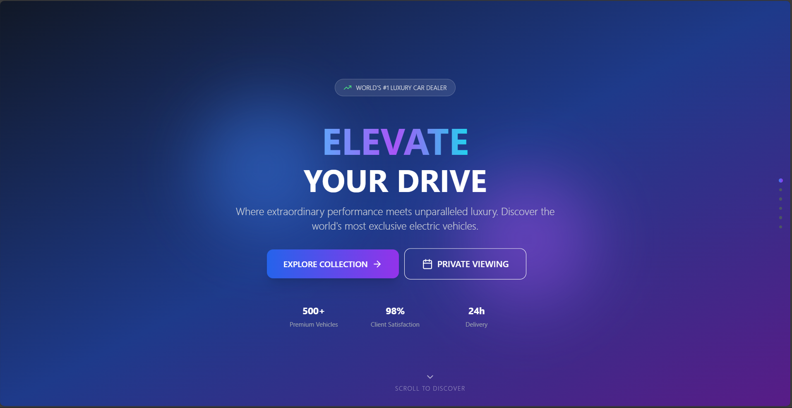

A high-consideration purchase needs to move from aspiration to information to financing and trust without turning the experience into a wall of forms.
The supplied screens combine an image-led vehicle experience with financing steps, service proof, testimonials, contact and company records.
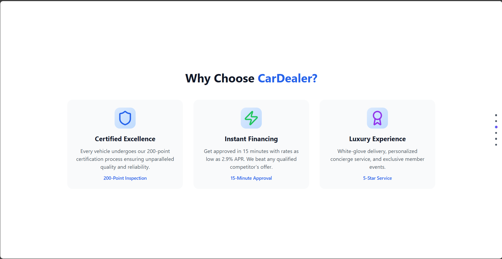
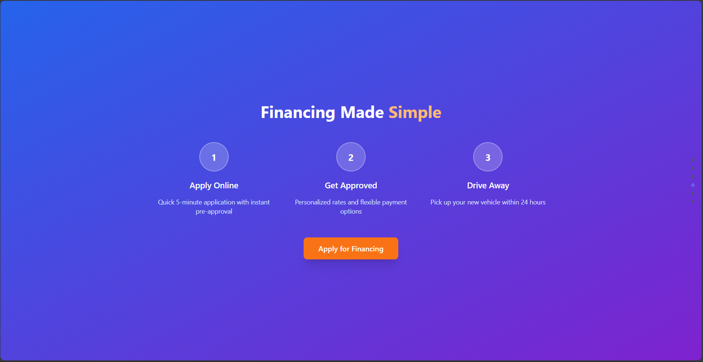
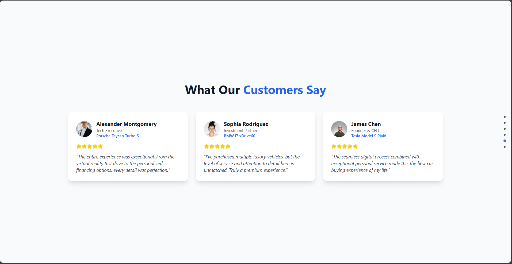
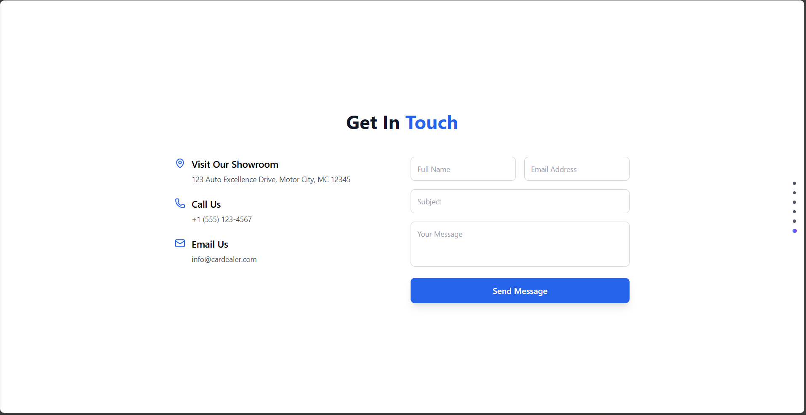
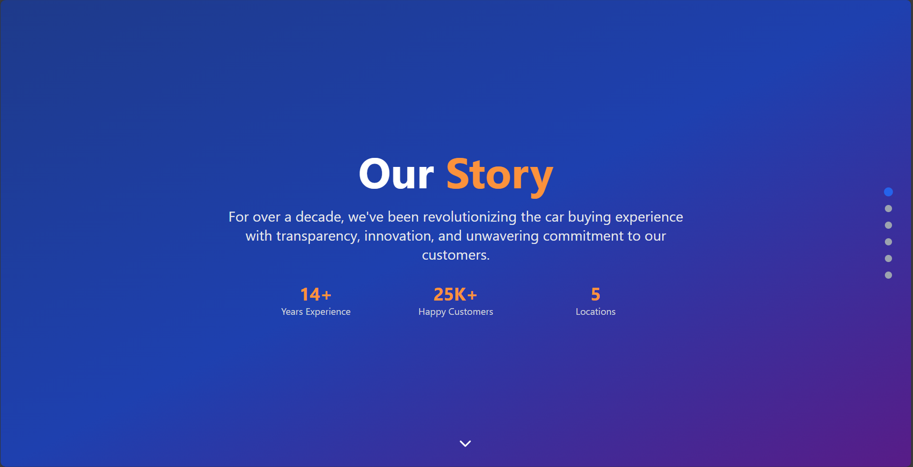
This section translates the supplied interface into the sequence of responsibilities visible in the build record.
The visual system lets the vehicle lead before supporting details take over.
Financing is presented as a legible sequence rather than a hidden secondary flow.
Certification, story, values and testimonials support a higher-consideration purchase.
A build record that connects the visible interface to the job the product is trying to do.
These are the actual project images supplied for the archive. They are shown without fabricated performance claims or fake client outcomes.
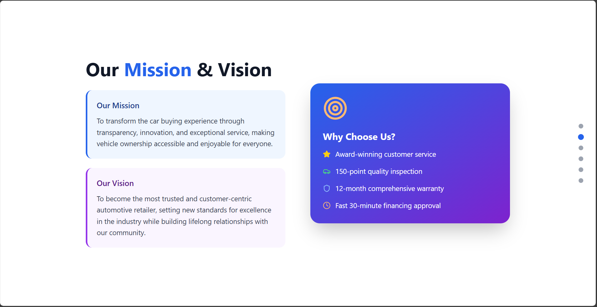
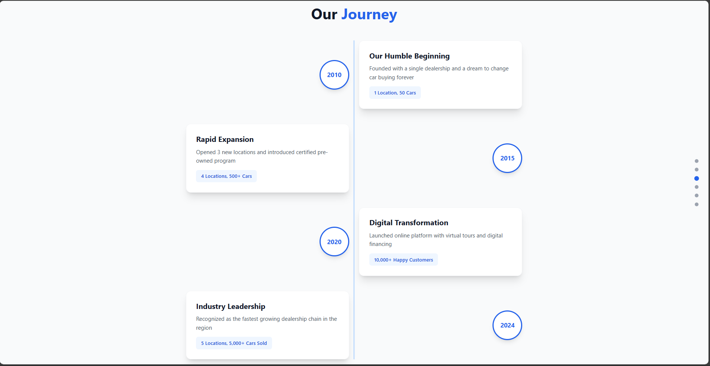
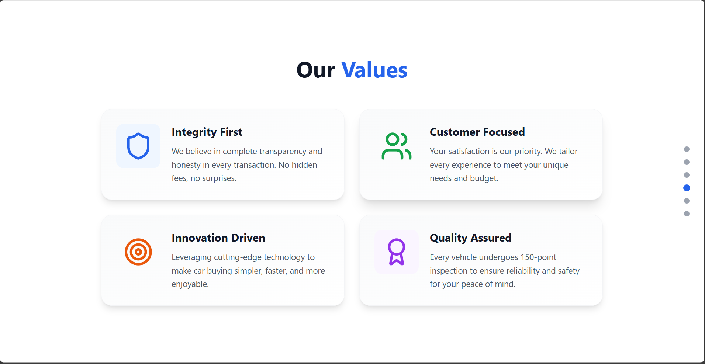
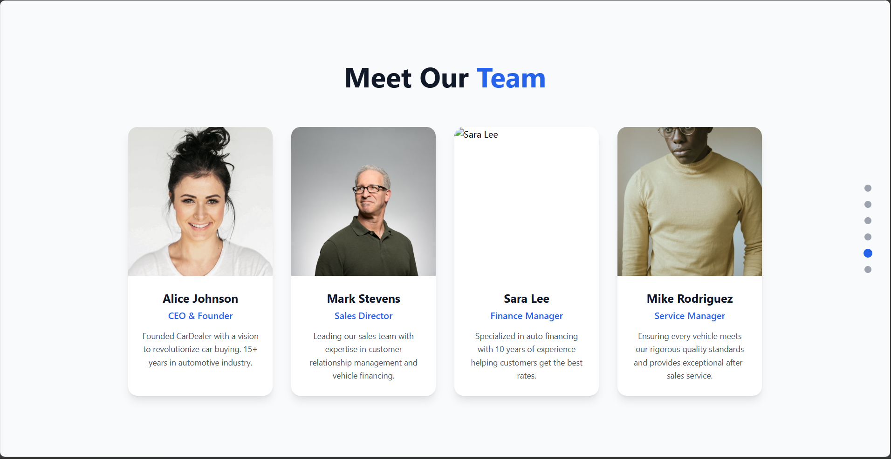
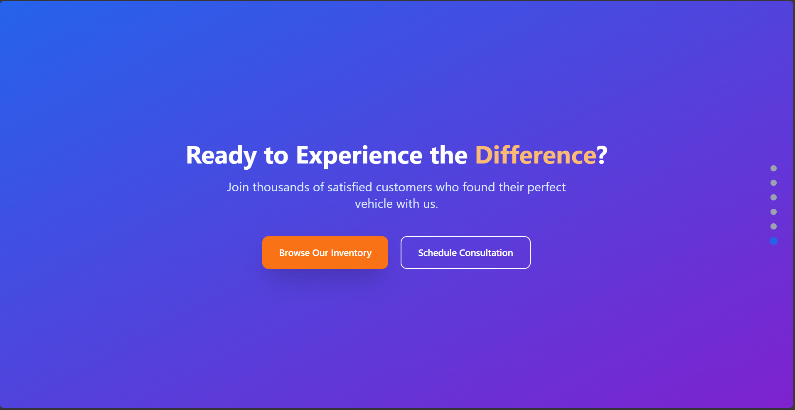